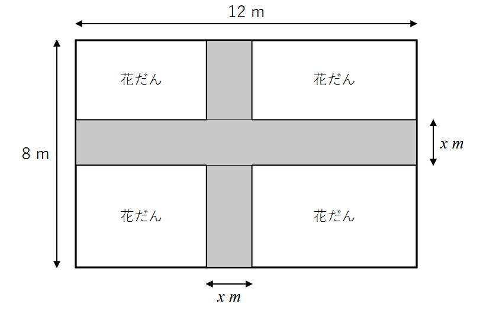
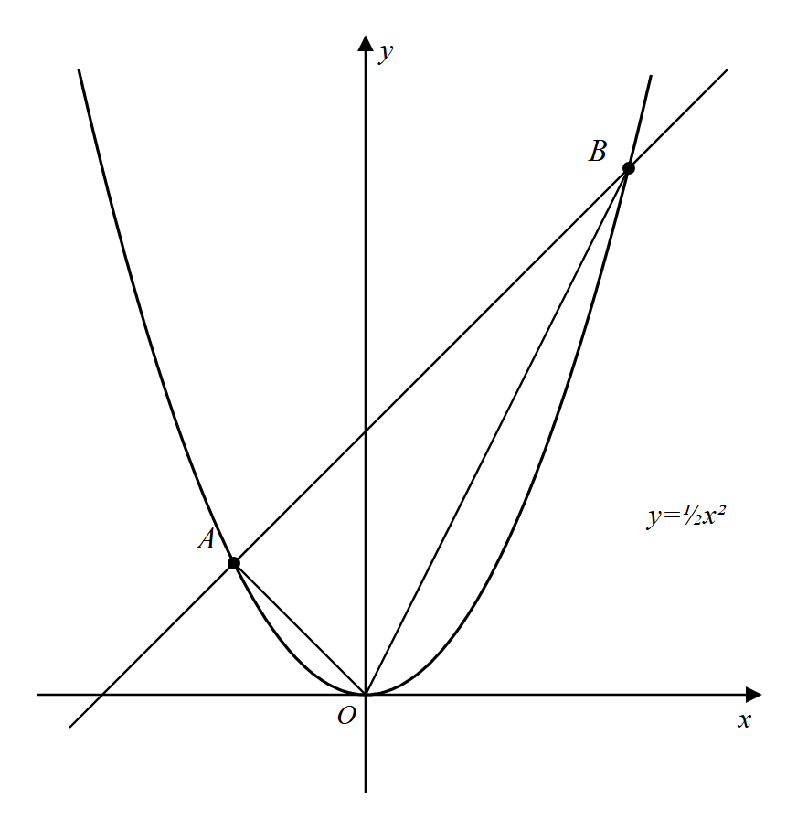
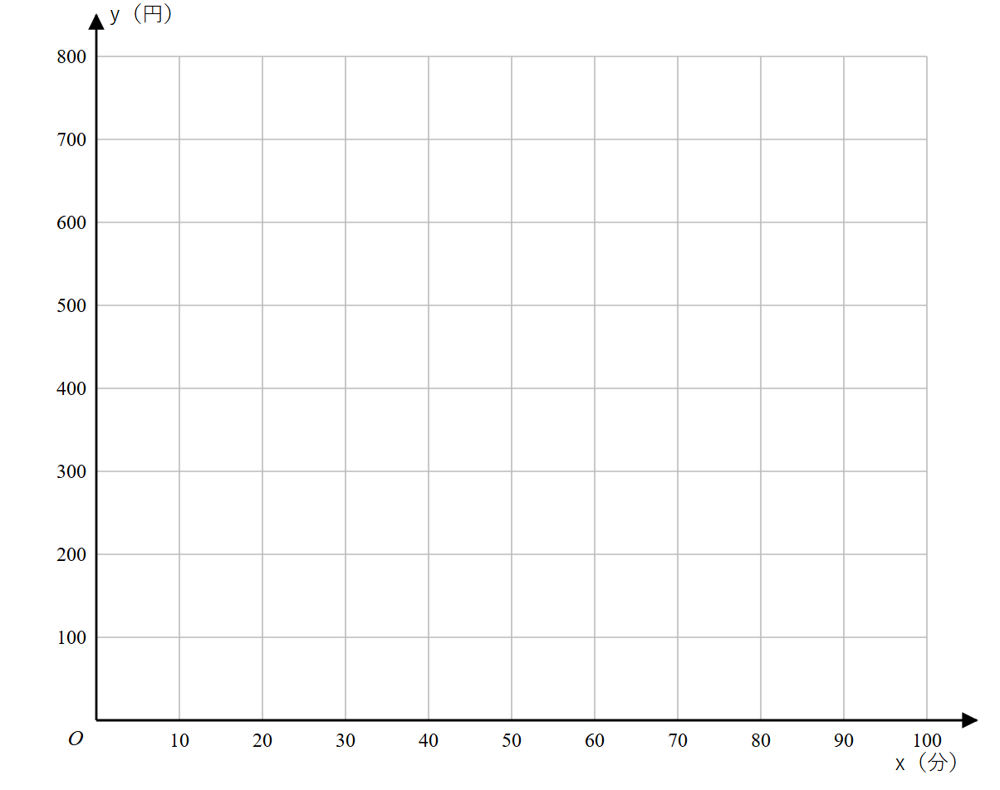

時間 50分 ／ 100点満点
【注意】
①答えはすべて紙（またはノート）に書くこと。
②「求め方」の欄がある問題は、答えだけでなく途中の式や考え方も書くこと。
③答えが分数になるときは約分し、√ をふくむときは根号の中をもっとも簡単な数にすること。
(1) （4点）
答（）
(2) （4点）
答（）
(3) （4点）
答（）
(4) （4点）
答（）
(5) （4点）
答（）
についての二次方程式 の解の１つが２であるとき、次の問いに答えなさい。
(1) の値を求めなさい。（3点）
答（）
(2) もう１つの解を求めなさい。（3点）
答（）
(3) 太郎さんは、二次方程式 を次のように解きました。太郎さんの解き方には誤りがあります。何がいけないのかを説明し、この方程式の正しい解をすべて求めなさい。（4点）
【太郎さんの解き方】両辺を でわると、 答え
説明
答（正しい解 ）
(1) 連続する２つの正の整数があり、それぞれを２乗した数の和が 61 になります。小さい方の整数を として方程式をつくり、この２つの整数を求めなさい。（6点）
求め方
答（）と（）
(2) 縦８m、横12mの長方形の土地に、図のように、縦と横に同じ幅 m の道を１本ずつつくります。道をのぞいた花だん（４か所）の面積の合計を 60 m² にするとき、道の幅を求めなさい。方程式をつくって求めなさい。（8点）

求め方
答（道の幅 ）m
(1) は の２乗に比例し、 のとき です。 を の式で表しなさい。（3点）
答（）
(2) 関数 で、 の値が から１まで増加するときの変化の割合を求めなさい。（3点）
答（）
(3) 関数 で、 の変域が のとき、 の変域を求めなさい。（4点）
答（）
(4) 次のア〜エの関数のうち、グラフが下に開いていて、グラフの開き方が最も小さいものを１つ選び、記号で答えなさい。（2点）
答（）
(5) 関数 で、 の変域が のとき、 の変域が となりました。 の値を求めなさい。（3点）
答（）

（2）〜（4）は、求め方も書きなさい。
(1) 点 A、点 B の座標をそれぞれ求めなさい。（4点）
答 A（，） B（，）
(2) 直線 AB の式を求めなさい。（4点）
求め方
答（）
(3) △OAB の面積を求めなさい。ただし、座標の１目もりを１cm とします。（5点）
求め方
答（）cm²
(4) 点 A を通り、△OAB の面積を２等分する直線の式を求めなさい。（5点）
求め方
答（）
(1) 転がり始めてから３秒間に進む距離を求めなさい。（3点）
答（）m
(2) 転がり始めて２秒後から５秒後までの間の平均の速さは、毎秒何 m ですか。（4点）
求め方
答（毎秒 ）m
(3) 斜面の長さが 32 m のとき、ボールが転がり始めてから斜面の下に着くまでにかかる時間を求めなさい。（3点）
求め方
答（）秒
(4) 転がり始めてからの時間が２倍になると、進む距離は何倍になりますか。 の式を使って、理由も説明しなさい。（3点）
理由
答（）倍
料金は、入庫してから 30 分までは 200 円、30 分をこえて 60 分までは 400 円、60 分をこえて 90 分までは 600 円です。入庫してから 分後の料金を 円とします。ただし、 とします。
(1) 入庫してから 45 分後の料金を求めなさい。（3点）
答（）円
(2) 料金が 600 円になるときの の値の範囲を、不等号を使って表しなさい。（3点）
答（）
(3) と の関係を表すグラフを、図の方眼にかきなさい。ただし、グラフの端の点をふくむ場合は ●、ふくまない場合は ○ を使ってかきなさい。（図をノートに写して、かいてもよい。）（4点）

― 終 ―